Tokyo, la capitale du Japon, est l’une des plus grandes villes du monde avec une
population de 14 millions d'habitants, et la plus grande des 47 préfectures du Japon. La longue histoire de sa prospérité a débuté avec l'établissement du Shogunat par Tokugawa Ieyasu en 1603.
C'est aujourd’hui le centre politique, économique et culturel du Japon, entre autres, ainsi que la source de diffusion de l'information. Le district administratif comprend
23 arrondissements, 26 grandes villes, 5 villes de moyenne importance et 8 villages. Située géographiquement à peu près au centre de l'archipel japonais et dans le sud de la
région du Kantô, Tokyo est entourée par la préfecture de Chiba à l'est, la préfecture de Yamanashi à l'ouest au pied des montagnes, la préfecture de Kanagawa au sud le long du fleuve
Tamagawa et la préfecture de Saitama au nord. La métropole, qui occupe une surface de 2 194 km2 constitue la 3e plus petite division administrative du Japon. De l'est à l'ouest, on
trouve tout autour de la ville des collines, des plateaux et des montagnes. Bien que d'une petite superficie, Tokyo offre une variété géographique très riche, allant de terres qui
sont à seulement quatre mètres au-dessus du niveau de la mer, jusqu'aux régions montagneuses avec des sommets dépassant 2 000 mètres. De plus, il faut noter que certaines
îles volcaniques du Pacifique comme Izu et les îles Ogasawara font également partie de Tokyo.
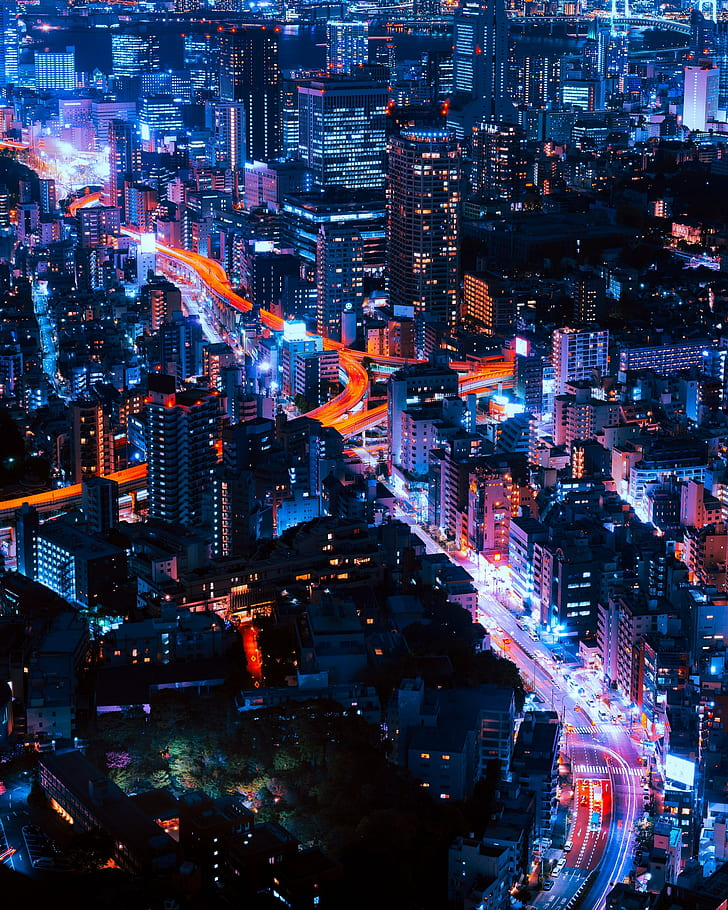
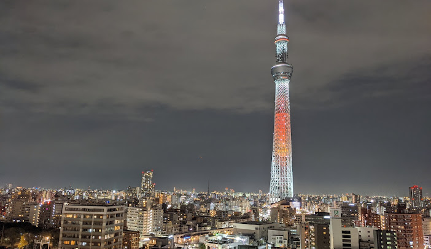
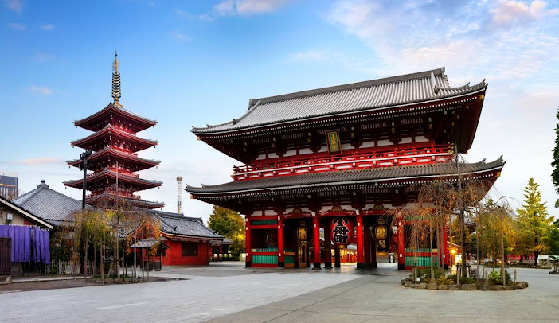
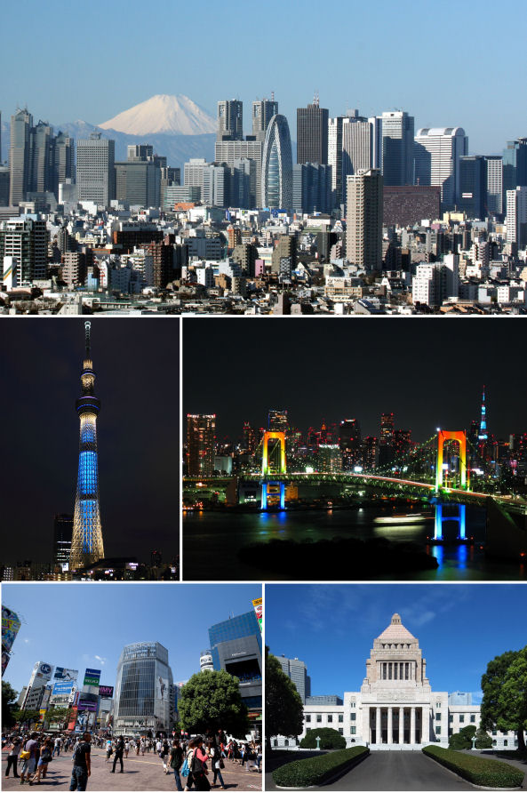
SETAGAYA PARK
L’Ouest de Tokyo comprend les arrondissements de Nerima, Suginami et Setagaya ainsi que les préfectures de Saitama au nord-ouest et Kanagawa pour sa partie la plus limitrophe de la
capitale. Les principales villes touristiques de cette banlieue sont Kawagoe, Mitaka, Chofu et Tama. Sur cette page sont regroupées toutes les sorties du grand ouest de la capitale
japonaise, pour certaines situées dans l'immense arrondissement de Setagaya (le second plus vaste, et le premier plus peuplé du grand Tokyo).
Ici ne sont pas incluses les visites à effectuer dans le "cœur" de l'immense ville, notamment autour de la ligne de train 🚅 circulaire Yamanote, mais celles un peu plus éloignées.
En majorité, ces attractions seront accessibles à partir de Shinjuku, la plus grande gare du monde, qui dessert un nombre incalculable de destinations depuis ses lignes.
L'élargissement à l'ouest de Tokyo offre une variété de paysages souvent étonnante, des
quartiers résidentiels aux balades en pleine nature, sans nier des complexes parfois plus impressionnants.
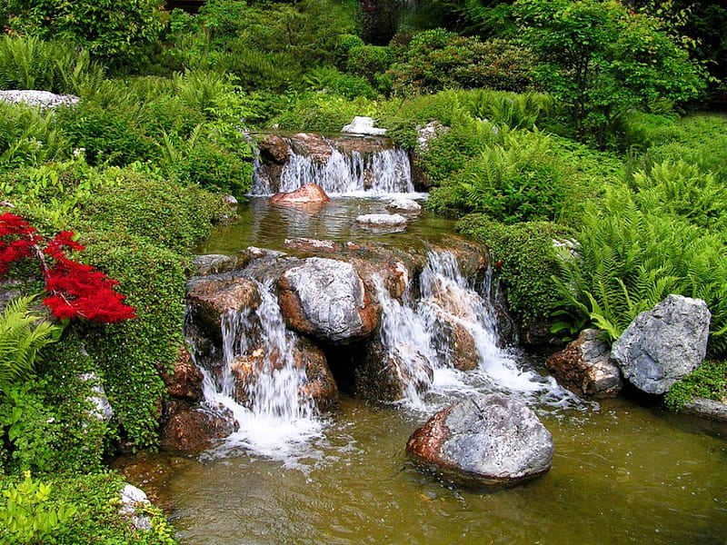
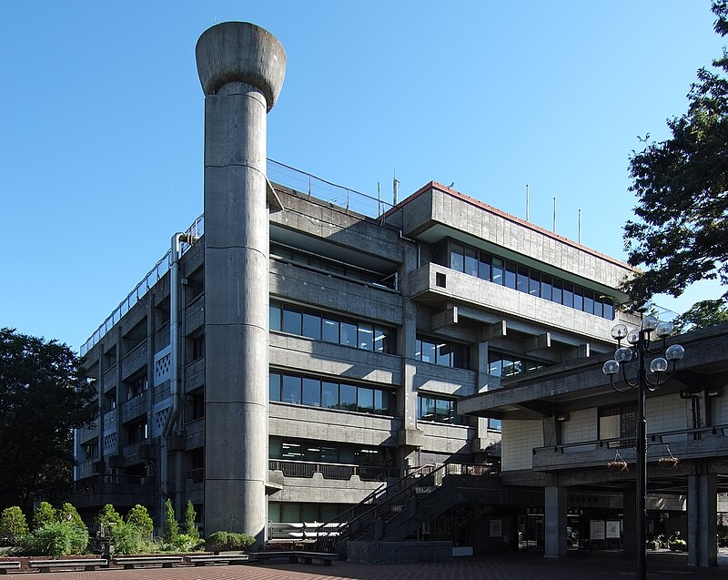
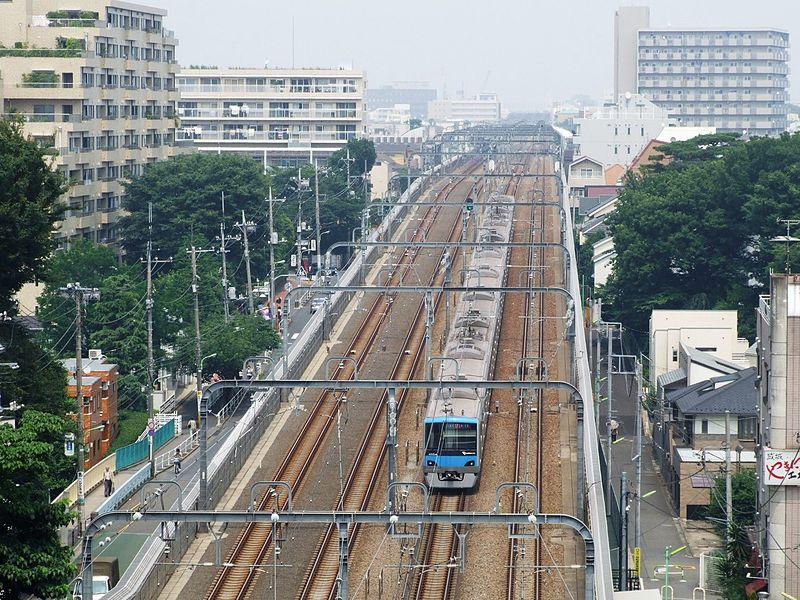
PARC HANEGI
Dans le courant du mois de février, les ume débutent leur floraison dans des tons de blanc, rose et rouge. La fin de l'hiver est annoncée, en même temps que l'arrivée prochaine du printemps et de ses nombreux sakura 🌸 en fleurs.
Le parc Hanegi comprend une colline que l'on est invités à gravir pour arriver à la zone de contemplation des pruniers. Ce spectacle éphémère attire chaque année plus de visiteurs qu'à l'accoutumée ; les allées
se montrent ainsi bien animées les week-end. La balade reste agréable et l'on peut prendre le temps nécessaire pour faire des photos ou bien respirer le parfum des fleurs de pruniers.
Les premiers piques-niques au soleil peuvent également se faire à même la pelouse ou bien installés sur des bancs. Des petits stands vendent de la nourriture pour l'occasion, mais l'on peut également se fournir
au konbini situé près de la gare.
Parc Hanegi (Setagaya, Tokyo), aire de jeux en plein air pour enfants,En plus du paysage saisonnier,
Hanegi Koen est fréquenté toute l'année par les locaux et pour ses installations sportives : terrains de tennis et de baseball principalement. Les clubs du quartier entraînent ici leurs licenciés.
Plusieurs aires de jeux en plein air sont également disponibles et libres d'accès au sein du parc. Les
familles peuvent ainsi jouer ensemble et les plus jeunes se donnent avec joie dans les toboggans et autres
structures de loisirs acrobatiques. On apprécie le choix varié des activités et l'espace accordé.
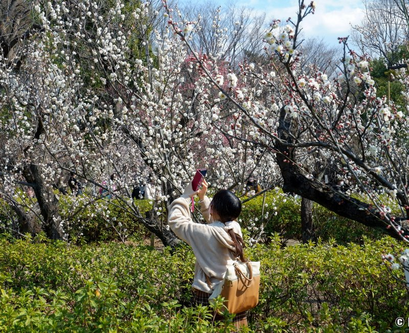
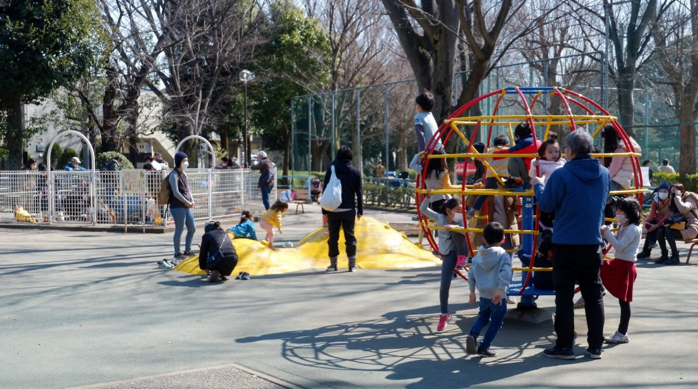
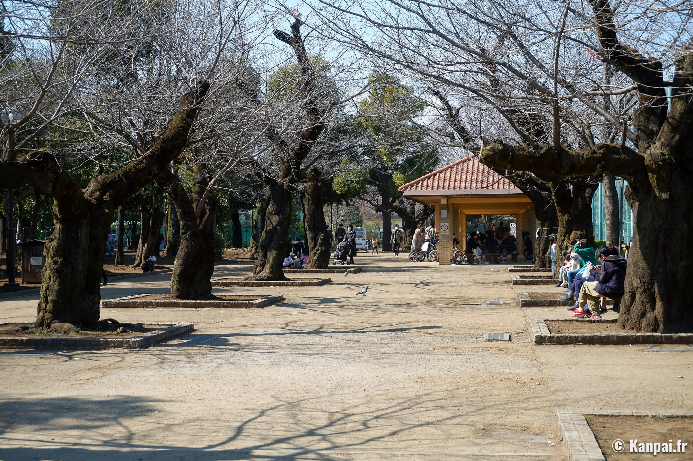
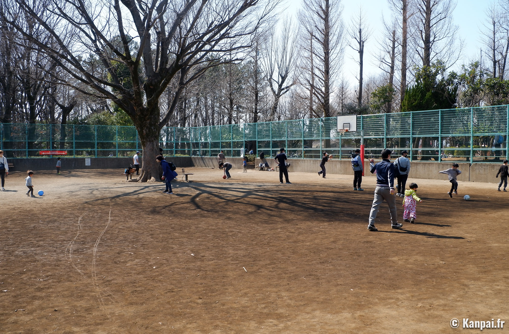
LE RESEAU METROPOLITAIN DE TOKYO
Le réseau métropolitain de Tokyo est exploité par deux grandes sociétés (Tokyo Metro et Toei) gérant en tout treize lignes qui totalisent 307 kilomètres pour environ 290 stations.
Chaque année, près de trois milliards de personnes empruntent le métro à Tokyo, ce qui en fait un élément indispensable du transport à l'intérieur de l'agglomération. En effet, le
réseau souterrain et aérien réduit considérablement le trafic routier et la pollution automobile est de ce fait relativement faible par rapport à d'autres grandes métropoles.
Généralement cité pour sa fréquentation hors-normes à la limite de la saturation (surtout aux heures de pointe), il est facilement mis en avant pour décrire la surpopulation de la
ville. Même si, dans certaines stations, des « pousseurs » postés sur les quais compressent les usagers à l'intérieur de la rame pour permettre la fermeture des portes, le
métro de Tokyo reste très efficace et sophistiqué. Le taux de délinquance y est très faible comme partout ailleurs dans la ville, et les stations ainsi que les rames sont fort
propres et entretenues très régulièrement.
Shinkansen en gare de Tokyo.
Train de la série E235 sur la ligne Yamanote.
Train de la série E353 sur le service Azusa.
Train de la série 5000 de la compagnie privée Keiō.
Bien que la gare de Tokyo soit la gare interurbaine principale de Tokyo et celle accueillant tous les Shinkansen, la station la plus grande est celle de Shinjuku. Cette
dernière est la plus fréquentée du monde. Les gares de Shibuya et Ikebukuro sont elles
aussi plus fréquentées que la gare de Tokyo. Akihabara, Ueno et Shinagawa constituent également des plaques importantes dans le réseau ferroviaire de Tokyo.
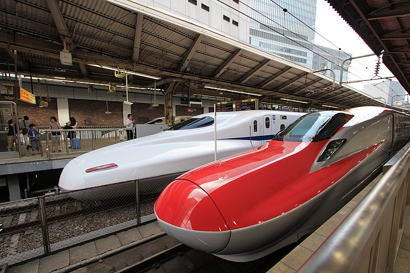
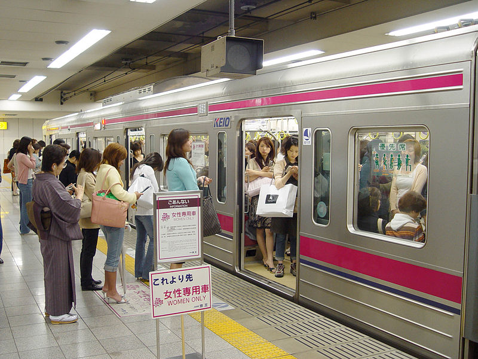
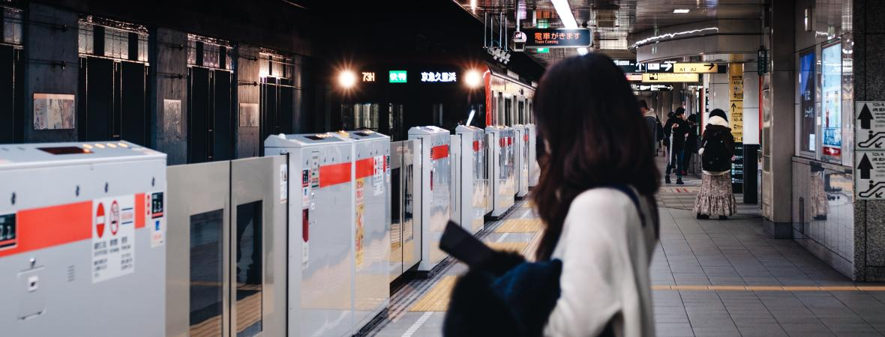
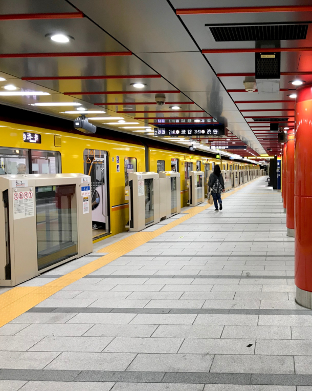
LA TOUR DE TOKYO
La tour de Tokyo (東京タワー, Tōkyō tawā?, de l'anglais Tokyo Tower) est une tour rouge et blanche située dans l'arrondissement de Minato à Tokyo au Japon. Son concept est fondé sur
celui de la tour Eiffel de Paris. Elle a été réalisée par l'architecte Tachū Naitō.
La tour mesure 332,6 mètres de haut (soit 2,6 mètres de plus que la tour Eiffel, qui en mesure 330 en comprenant son antenne), ce qui en fait l'une des plus hautes tours en métal du L'édifice ne pèse
que 4 000 tonnes, bien moins que les 10 100 tonnes de la tour Eiffel. La construction démarre en 1957 et
s'achève en 1958. La tour ouvre au public le 23 décembre de la même année. Elle est éclairée par 176
ampoules réparties à différents endroits. L'hiver, elle est illuminée en orange, l'été en blanc.
L'antenne dominant la tour s'est tordue lors du séisme du 11 mars 2011.
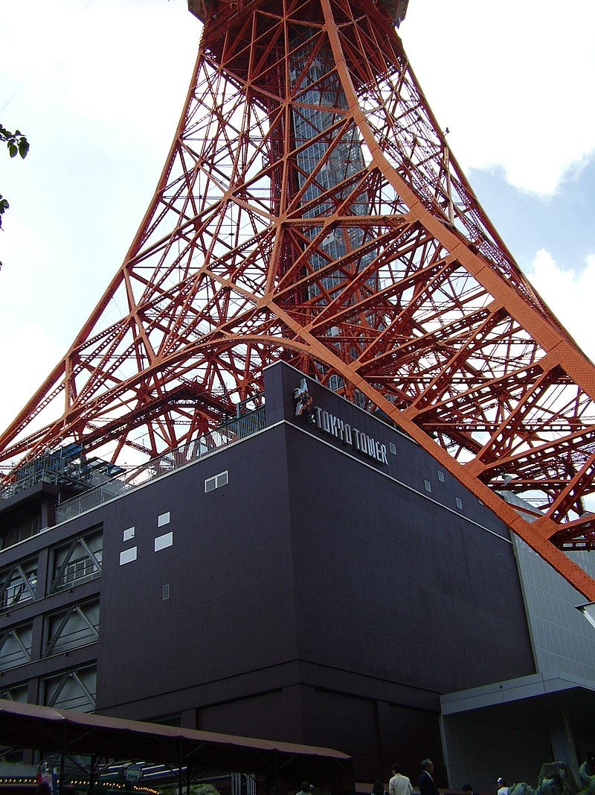
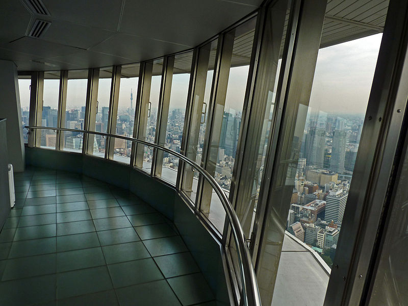
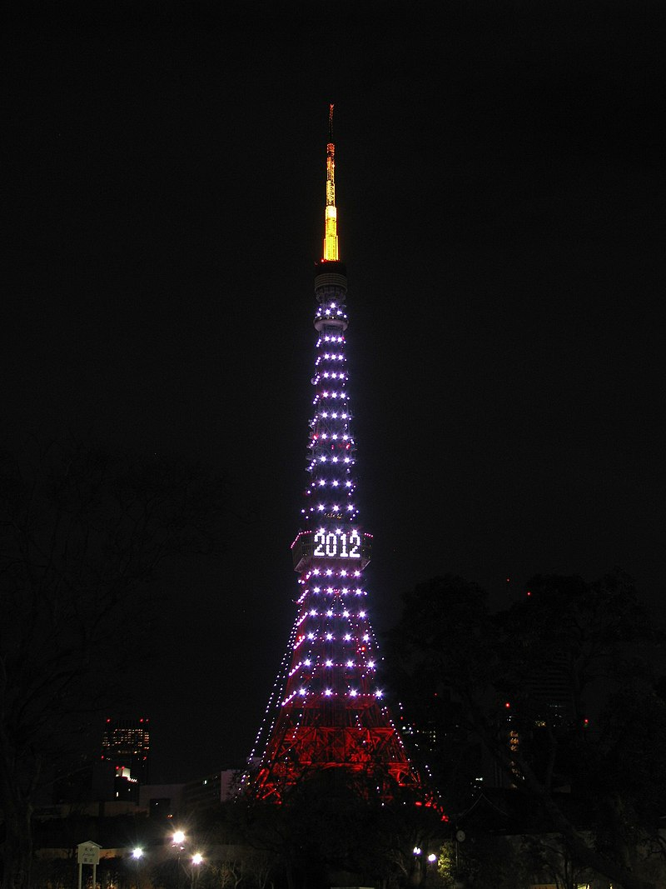
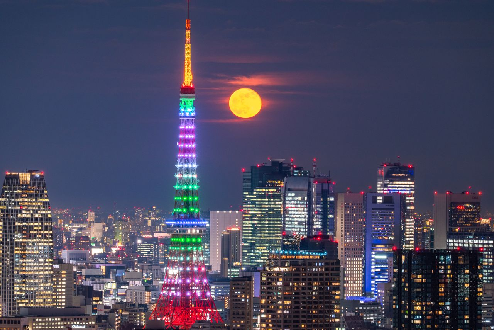
 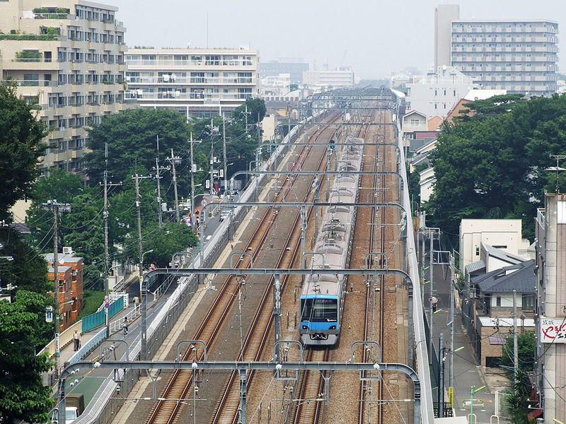
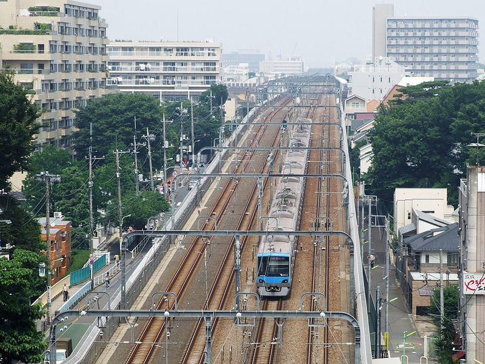